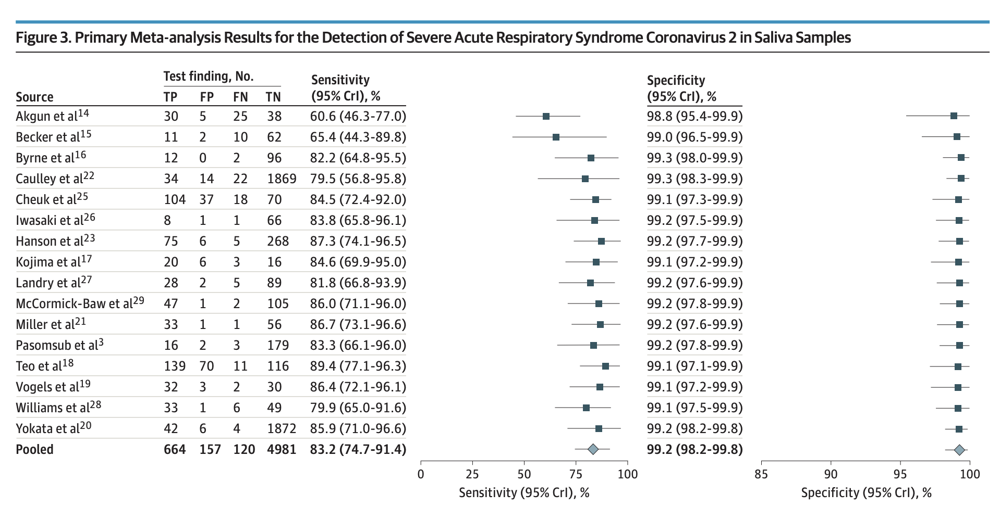

(0.8087 )*(0.0053)/((0.8087 )*(0.0053) + (1-0.9760)*(1-0.0053))[1] 0.1522115의학에서 진단은 환자의 상태나 질병의 징후를 판단하는 일이다. 진단을 수행하기 위해서 의사는 전통적인 진단법도 사용하지만 다양한 계측 기계를 이용하는 진단 기법도 사용한다. 최근에는 첨단 분석 장비를 이용하여 다양한 질병에 대한 진단을 정확하고 쉽게 할 수 있다. 특히 최근 코로나 시대에 들면서 일반인도 여러 가지 이유로 진단 검사를 받는 경우가 자주 일어난다.
진단 기법을 사용하여 감염 여부 등을 판단하는 경우 언제나 오류가 발생한다. 최근에는 첨단 기술 덕분으로 이러한 오류율이 많이 줄어 들었지만 오류가 없는 진단 기법은 개발하기 힘들다.
코로나 검사를 받고 음성 판정을 받아도 실제 양성인 경우가 나타나며, 반대로 양성 판정을 받아도 음성이 경우가 나타난다. 이렇게 진단에서 발생하는 오류는 두 가지 종류 가 있다.
연구자들이 진단 기법을 개발할 때 오류의 가능성이 작아지도록 노력하지만, 불행하게도 두 가지 오류의 확률을 모두 0 으로 만들 수 없다.
극단적인 예를 들어보자. 코로나 바이러스 감염의 유무를 판단하는 진단 기법 A는 검사를 받는 사람을 모두 양성이라고 판단한다고 하자. 이 경우 양성인 사람이 음성으로 잘못 판단되는 오류의 확률은 0이다. 반대로 진단 기법 B는 검사를 받는 사람을 모두 음성이라고 판단한다면 음성인 사람이 양성으로 잘못 판단되는 오류의 확률은 0이다. 여기서 진단 기법 A 와 B 는 모두 쓸모없는 검사라는 것을 우리는 잘 알고 있다. 양성인 사람과 음성인 사람을 잘 구별할 수 있는 진단 기법이 좋은 방법이다.
이제 우리는 진단 기법을 평가할 때 사용되는 확률의 측도에 대하여 알아보자.
일반적으로 양성(positive)는 바이러스에 감염되었거나 질병이 있다는 사건을 말한다. 음성(negative)는 양성의 반대 사건이다. 하지만 양성과 음성의 의미가 바뀌는 경우도 종종 있다.
진단 기법을 평가하는 경우 다음과 같은 두 질문에 대해서 생각해 보아야 한다.
양성인 사람을 얼마나 잘 양성으로 판단하는지에 대한 평가 기준이 민감도(sensitivity) 이고 음성인 사람을 얼마나 잘 음성으로 판단하는지에 대한 평가 기준이 특이도(specificity) 이다. 민감도와 특이도의 정도는 확률로서 나타낼 수 있다.
진단 기법에 대한 실험 연구를 수행하면 그 결과는 \(2 \times 2\) 분할표로 다음과 같이 요약할 수 있다. 일반적으로 진단 기법의 효과를 측정하는 실험은 대상자에 대한 질병의 유무를 알고 시작한다.
| 진단(T) / 질병(D) | 양성 (\(D+\)) | 음성 (\(D-\)) |
|---|---|---|
| 양성 (\(T+\)) | \(TP\) | \(FP\) |
| 음성 (\(T-\)) | \(FN\) | \(TN\) |
위의 표에서 각 셀에 해당하는 진단 결과는 다음과 같이 나타낼 수 있다.
이제 분할표 @ref(tab:diagnose) 에서 민감도와 특이도는 다음과 같이 정의된다.
\[\begin{align} \text{Sensitivity}(민감도) & = \frac{TP}{TP+FN} \\ \text{Specificity}(특이도) & = \frac{TN}{FP+TN} (\#eq:sensitivity) \end{align}\]
다음은 코로나 바이러스 검사법에 대한 여러 연구에서 나온 민감도와 특이도 결과를 보여 준다 ((butler2021comparison?)).

tablecorona, out.width='100%', echo=FALSE, fig.align='center', fig.cap="코로나 검사의 민감도와 특이도 " } knitr::include_graphics("myimages/corona.png")
예제로서 그림 @ref(fig:tablecorona) 에 제시한 종합적인 결과(pooled counts)를 이용하여 민감도와 특이도를 구해보자.
| 진단(T) / 질병(D) | 양성 (\(D+\)) | 음성 (\(D-\)) |
|---|---|---|
| 양성 (\(T+\)) | \(664\) | \(157\) |
| 음성 (\(T-\)) | \(120\) | \(4981\) |
민감도와 특이도는 다음과 같이 구할 수 있다.
\[\begin{align*} \text{Sensitivity} & = \frac{664}{664+157} = 0.8087 \\ \text{Specificity} & = \frac{4891}{120+4891} = 0.9760 \end{align*}\]
위에서 구한 민감도와 특이도는 (butler2021comparison?) 에서 제시한 민감도(83.2%), 특이도(99.2%) 와 유사하지만 약간의 차이가 있다. 그 이유는 (butler2021comparison?) 는 모든 실험 결과를 단순하게 더한 것이 아니라 메타분석(meta analysis)을 사용하여 얻은 결과이기 때문이다. 메타분석은 같은 주제에 대한 여러 개의 독립적인 연구 결과들을 결합하여 결론을 추론하는 연구 방법이다.
앞에서 살펴본 민감도와 특이도를 구하는 실험에서는 실험 대상자가 질병이 있는지 없는지 알고 있다. 하지만 실제 검사는 진단을 받는 사람이 질병이 있는지 모르는 상태에서 진행된다.
따라서 우리가 정말 관심 있는 확률은 양성으로 진단된 사람이 실제로 양성인지?에 대한 확률이다.
양성으로 판정되었을 때 실제로 병에 걸렸을 확률을 양성예측도(\(PV+\)) (predicted value of positive test, predictive value positive) 라고 부르며 음성으로 판정되었을 때 실제로 병에 걸리지 않았을 확률을 음성예측도(\(PV-\)) (predicted value of negative test, predicted value negative) 라고 부른다. 양성예측도와 음성예측도는 조건부 확률로 표현할 수 있다.
\[\begin{align} PV+ & = P( D+ | T+) \\ PV- & = P( D- | T-) (\#eq:pv) \end{align}\]
이제 앞에서 살펴본 민감도와 특이도도 다음과 같이 조건부 확률로 나타낼 수 있다.
\[\begin{align} \text{Sensitivity} & = P(T+|D+) \\ \text{Specificity} & = P(T-|D-) (\#eq:sensitivity2) \end{align}\]
이제 실제로 중요한 양성예측도와 음성예측도를 민감도와 특이도를 이용하여 유도해 보자. 두 확률은 사건과 조건이 바뀐 확률이기 때문에 베이즈 정리(Bayes’ Theorem)을 이용하여 구할 수 있다.
일단 양성예측도를 구하는 식을 베이즈 정리를 적용하여 유도해 보자.
\[ P( D+ | T+) = \frac{ P(T+|D+)P(D+)} { P(T+|D+)P(D+) + P(T+|D-)P(D-)} \]
위의 식에서 나타나는 확률 \(P(D+)\) 는 모집단에서 질병에 걸린 사람들의 비율을 의미하며 이를 유병률(prevalence) 이라고 부른다. 즉 양성예측도를 구하려면 질병의 유병률을 알아야 한다.
다시 식을 정리해 보면 양성예측도에 대한 공식은 다음과 같다.
\[\begin{align} P( D+ | T+) & = \frac{ P(T+|D+)P(D+)} { P(T+|D+)P(D+) + P(T+|D-)P(D-)} \\ & = \frac{ P(T+|D+)P(D+)} { P(T+|D+)P(D+) + [1- P(T-|D-)][1-P(D+)]} \\ & = \frac{(민감도)(유병률)}{(민감도)(유병률) + (1-특이도)(1-유병률)} (\#eq:pvplus) \end{align}\]
비슷한 계산 방법으로 음성예측도는 다음과 같이 주어진다.
\[\begin{align} P( D - | T -) & = \frac{ P(T -|D -)P(D -)} { P(T-|D-)P(D-) + P(T-|D+)P(D+)} \\ & = \frac{ P(T-|D-)[1-P(D+)]} { P(T-|D-)[1-P(D+)] + [1- P(T+|D-)] P(D+)} \\ & = \frac{(특이도)(1- 유병률)}{(특이도)(1-유병률) + (1-민감도)(유병률)} (\#eq:pvminus) \end{align}\]
이제 표 @ref(tab:diagnose2) 의 결과를 이용하여 코로나 검사의 양성예측도와 음성예측도를 구해보자.
코로나 유병률은 나라마다 다르고 추정하기도 힘들다. 따라서 쉽게 현재 까지 누적환자수를 전체 인구로 나눈 단순한 비율을 유병률로 사용해 보자(주의! 우리가 여기서 사용한 비율은 실제 유병률을 계산하는 방법과 다르다). 2021년 현재 누적 환자 수가 274,415 명이고 2020년 기준 총인구는 51,829,136 명이므로 유병률을 \(274415/51829136= 0.0053\) 이라고 하자.
이제 표 @ref(tab:diagnose2) 의 결과를 이용하면 코로나 검사의 양성예측도와 음성예측도는 다음과 같이 추정할 수 있다.
\[\begin{align*} P( D+ | T+) & = \frac{(민감도)(유병률)}{(민감도)(유병률) + (1-특이도)(1-유병률)} \\ & = \frac{(0.8087 )(0.0053)}{(0.8087 )(0.0053) + (1-0.9760)(1-0.0053)} \\ & = 0.1522 \end{align*}\]
(0.8087 )*(0.0053)/((0.8087 )*(0.0053) + (1-0.9760)*(1-0.0053))[1] 0.1522115\[\begin{align} P( D - | T -) & = \frac{(특이도)(1- 유병률)}{(특이도)(1-유병률) + (1-민감도)(유병률)}\\ & = \frac{(0.9760)(1- 0.0053)}{(0.9760)(1-0.0053) + (1-0.8087)(0.0053)} \\ & = 0.9989 (\#eq:pvminus) \end{align}\]
(0.9760)*(1- 0.0053)/((0.9760)*(1-0.0053) + (1-0.8087)*(0.0053))[1] 0.9989567사실 코로나 유병률은 정확하게 알 수도 없고 시간에 따라 변할 것이다. 이제 다양한 유병률에 따라서 양성예측도와 음성예측도가 어떻게 변하는지 계산해 보자.
calpred <- function(prev, sen, spe){
pred.pos <- sen*prev/(sen*prev + (1-spe)*(1-prev))
pred.neg <- spe*(1-prev)/(spe*(1-prev) + (1-sen)*(prev))
res <- data.frame(sen, spe, prev, pred.pos, pred.neg)
colnames(res) <- c("Sensitivity", "SPecificity","Prevalnce", "Pred. Post.", "Pred. Nega.")
res
}
preval.range <- seq(0, 0.02, 0.002)
calpred(preval.range ,0.8087, 0.9760 ) Sensitivity SPecificity Prevalnce Pred. Post. Pred. Nega.
1 0.8087 0.976 0.000 0.0000000 1.0000000
2 0.8087 0.976 0.002 0.0632553 0.9996074
3 0.8087 0.976 0.004 0.1191947 0.9992135
4 0.8087 0.976 0.006 0.1690179 0.9988183
5 0.8087 0.976 0.008 0.2136761 0.9984218
6 0.8087 0.976 0.010 0.2539329 0.9980241
7 0.8087 0.976 0.012 0.2904083 0.9976250
8 0.8087 0.976 0.014 0.3236113 0.9972247
9 0.8087 0.976 0.016 0.3539633 0.9968231
10 0.8087 0.976 0.018 0.3818165 0.9964201
11 0.8087 0.976 0.020 0.4074671 0.9960159calpred(preval.range ,0.8320, 0.9920 ) Sensitivity SPecificity Prevalnce Pred. Post. Pred. Nega.
1 0.832 0.992 0.000 0.0000000 1.0000000
2 0.832 0.992 0.002 0.1724710 0.9996607
3 0.832 0.992 0.004 0.2946176 0.9993203
4 0.832 0.992 0.006 0.3856613 0.9989788
5 0.832 0.992 0.008 0.4561404 0.9986361
6 0.832 0.992 0.010 0.5123153 0.9982923
7 0.832 0.992 0.012 0.5581395 0.9979473
8 0.832 0.992 0.014 0.5962326 0.9976011
9 0.832 0.992 0.016 0.6283988 0.9972538
10 0.832 0.992 0.018 0.6559215 0.9969053
11 0.832 0.992 0.020 0.6797386 0.9965557